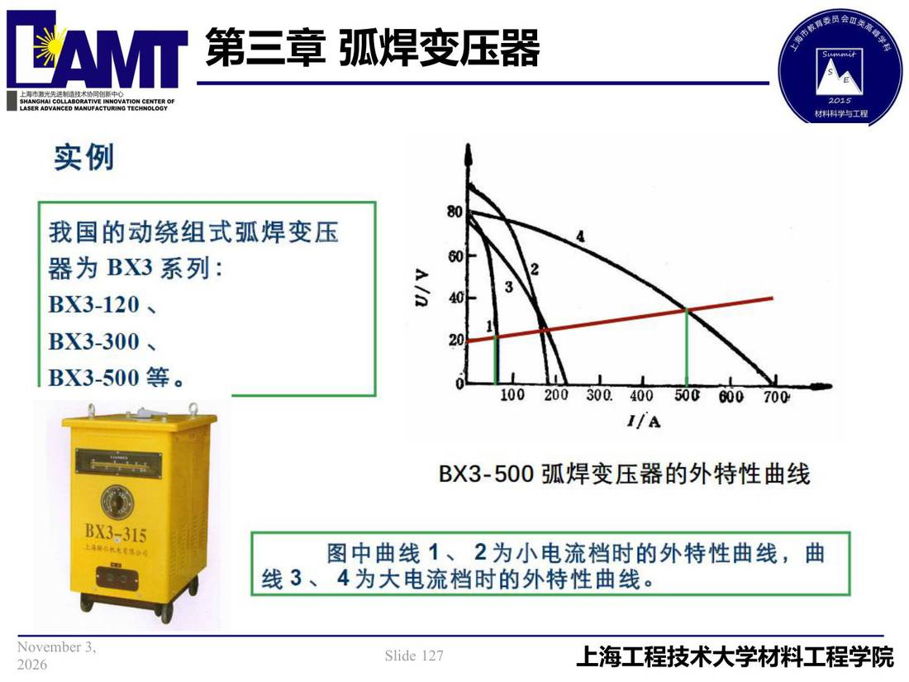

03 第3章 弧焊变压器/p127 我国的动绕组式弧焊变压
p127 我国的动绕组式弧焊变压
📄 原文：📄 弧焊电源 课件（PDF 第 127 页）（幻灯片 127/273；PDF 第 127 页）
我国的动绕组式弧焊变压

讲义原文
本页在课件中是纯图文版式（无文字层），内容以页图与下面的 OCR 文本为准。
页面文字（OCR 机读，可能有错字，以页图为准）
实例 我国的动绕组式弧焊变压 器为BX3系列： BX3-500 弧焊变压器的外特性曲线 上本联仁帆也有搾公司 图中曲线1、2为小电流档时的外特性曲线，曲 线3、4为大电流档时的外特性曲线。